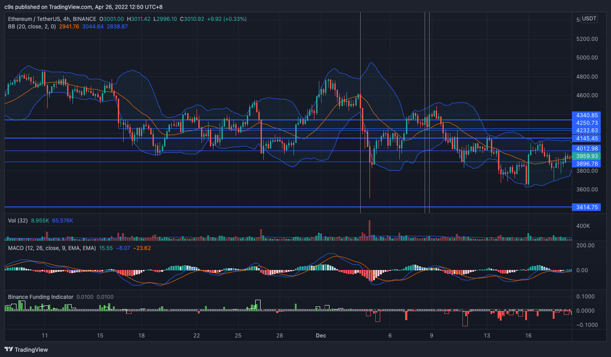
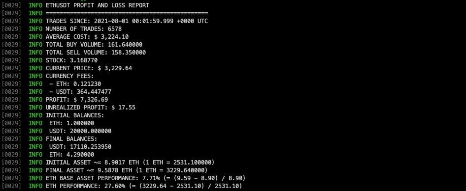
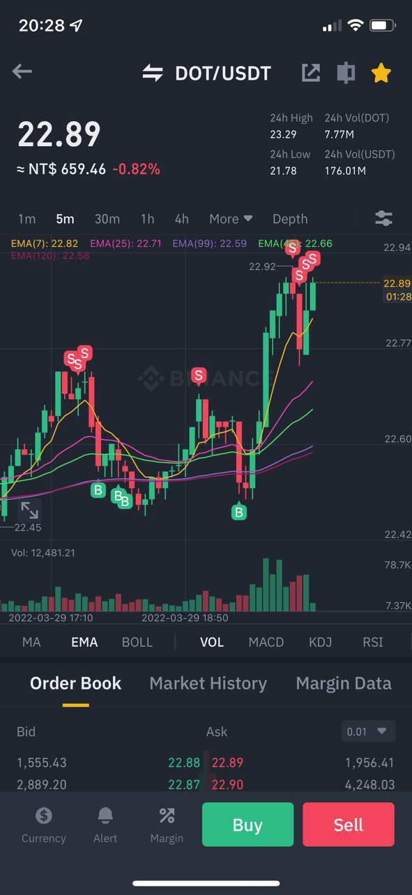

你還在用老派網格交易嗎? 試試新一代的 bollmaker 策略吧
網格交易
其實經歷 2020 年到 2022 年這整整兩年的加密貨幣牛市，很多人應該都已經知道網格交易策略是什麼。
熟悉網格交易的朋友應該都知道，網格需要設定區間，所以，要不是你的區間設定得非常好，每次抓震盪區間都能夠抓到非常準確，就是你必須砸重金開張天地網格，設下非常大的區間和非常多的格數。 但是天地網格單其實資金利用率很低，因為震盪幅度每天可能 2%~5% 左右遊走，你的區間如果設定是 500% 的上下區間，那可能每天吃到的單就很有限，掛單只能吃到很小的範圍。
但是在牛市中，震盪區間常常接下來就是幅度不小的拉盤，如果你設定震盪區間網格，那麼每次價格突破你的震盪區間，網格就是一定會幾乎賣飛所有現貨。
研發全新穿越牛熊交易策略 — bollmaker
筆者這段時間一直在研究交易，在去年第二波新高回落時，思考什麼樣的策略有辦法穿越牛熊，也因此有了一些交易策略的靈感。

2021 年末 ETHUSDT 走勢
如上圖，ETHUSDT 的 4h 小時線做肉眼回測，當時是在接近 ATH 4800 左右的位置，價格不斷在布林通道上下方震盪來回作出緩跌，每一次都會重新回到布林通道上方，才繼續開始下跌。
所以筆者利用布林通道加上部位控制的算法，研發出 bollmaker 這套使用雙重布林通道的造市策略，但沒想到效果意外地好，只要設定完，放著給他跑就可以應付各種價格區間，幾乎不用一直調整參數。
雖然是自己研發，又是開放原始碼，肯定會有人抄襲模仿，但是筆者不怕，原因是我們每週都持續在研發改進。
我們先來看 bollmaker 的回測績效:

使用八月的資料來做回測，測試到九月初的超大暴跌，初始資本: 20,000 USDT+ 1 ETH，單月已實損益 +$7,326.69。
最關鍵的是，跑完策略後，維持未實現損益 UNREALIZED PROFIT: +$ 17.55
沒有過度 hold ETH 部位，也沒有提早賣飛 ETH 部位，如果用這個獲利來試算 APY 的話，約是 APY +3097%。
bollmaker 實戰的下單位置
先來看筆者跑 bollmaker 實戰的下單位置，這是幣安 App 的下單歷史顯示，S 是 Sell 賣單成交，B 是 Buy 買單成交:

bollmaker 的基本原理
其實 bollmaker 顧名思義就是他算是一種造市策略，透過利用在市場上創造流動性，同時在 mid price 上下方掛買單賣單，被動等其他人下單跟你成交來取得獲利。
但造市策略的天敵就是一路跌和一路漲，所以 bollmaker 透過兩個不同時間區間的布林通道來管控造市的下單。
長時間通道: 用來控制部位大小
短時間通道: 用來避免在強趨勢出現的時候下單

用上圖來解釋，如果我們長時間通道採用 30m，畫出來的布林通道大概是長這樣，價格根據常態分佈的機率 95.4 會在通道內遊走，因此我們抓下方通道用來囤貨，上方通道用來出貨來掛單，並依照通道的寬度去算出一個最大部位的分佈。
舉例來說，當價格靠近布林通道上方的時候，我們可以設定最多買 ETH 就是買到 0.1 顆，當價格靠近布林通道下方的時候，我們可以設定最多買 ETH 可到 10 顆。
所以透過這樣價格的遊走和動態的調控部位，我們就可以利用市場上的 Spread 價差來買低賣高獲利。
bollmaker 是利用向下攤平的概念，在下跌趨勢中降低持有成本，並在反彈拉回的時候有機會能夠賣出並減碼，因此只要你本金足夠，就有辦法在市場週期中賺到錢。
BollMaker 適合的市場和情境
基本上要跑 bollmaker 主要還是以囤貨為目的，囤貨和逃頂是兩個極端的面相，兩者很難用同一組設定兼得。 也因此，你需要去選擇一個你願意長期投資的資產來做操作，不要去選投機幣來跑。
所以當你覺得現在市場行情可以準備開始囤貨，就很適合跑 bollmaker 策略。
建議跑在市值相對高的幣種，成交量高，震盪也多，且因為市值高的幣種在空頭市場來的時候，跌幅也不會像很多小幣一樣這麼深。大幣跌 8% 的時候，有些小幣一天可以跌到 20%。
BollMaker 策略的缺點
醜話也是要先講在先，畢竟沒有策略能夠應付所有市場的極端情況。
bollmaker 不怕急跌，因為這樣反而有機會在短時間內拉低持倉成本，但 bollmaker 的天敵是一路緩跌完全沒有回彈 — 為什麼？因為價格要靠近布林通道上方的時候，我們才有機會開始減倉。
bollmaker 在掛單的時候，可採取每分鐘掛單一次，或是每五分鐘掛單一次，這可以自由設定，時間越短，成交頻率越高，獲利也會相對可觀，但在面對下跌的狀況，自然就會犧牲逃頂的特性。
剛剛上面有講到，bollmaker 是利用向下攤平的概念，在下跌趨勢中降低持有成本，並在反彈拉回的時候有機會能夠賣出並減碼，所以如果你的本金只有幾百美金是沒辦法跑的 — 為什麼? 因為交易所都有最小下單金額限制，通常是十美金，你每次掛單至少需要 10 美金，但你只準備 100 美金的話，就只有 10 次機會可以向下攤平，所以這樣會導致套牢的機率非常大。
根據筆者的實測，本金最少最少要能夠做 100~200 次以上的掛單，每單金額至少要 20U，也就是本金差不多需要 200 x 20 = 4000 是最小需求。
市場價差 Spread
由於 bollmaker 的獲利靠的是市場的波動性，所以交易所的主動成交波動性很重要，看的是市場上的 taker buy 和 taker sell。
價格波動性來講，Binance 還是比 FTX 高，如果希望成交頻率高的話，會比較推薦在幣安上面跑 bollmaker。 FTX 也不是不行，但頻率自然會低一點。
在 MAX 交易所的話，由於 MAX 交易所的手續費非常低，幾乎是幣安的一半以上，而且又特別容易升等 VIP，所以如果你要在 MAX 上跑可以掛更近，舉例來說幣安上如果掛 0.1% 的價差 (幣安手續費是 0.075%)，那在 MAX 上可以掛到 0.05% 的價差達到類似的效果。
如果你喜歡筆者開發的自動交易策略，歡迎給筆者一點支持和鼓勵，可使用筆者的推薦碼註冊幣安, MAX 或 FTX 🙏
- 幣安 https://accounts.binance.com/en/register?ref=38192708
- MAX https://max.maicoin.com/signup?r=c7982718
- FTX https://ftx.com/referrals#a=bbgo
如何設定 bollmaker?
如果你是工程師，對怎麼 build & install 已經非常熟悉了，可以直接參考 bbgo 官方 repository 的文件做設置:
https://github.com/c9s/bbgo
如果你都還不懂，也還沒有跑過 bbgo ，可以先看看下面這篇:
BBGO — 在家也可以跑網格策略程式各位從 Google 進來看到這篇文章，應該已經很暸解網格策略的運作方式還有獲利模型，網格策略也有很多種變化，在這邊就不再闡述。c9s.medium.com
如果各位已經 ready 了，那就可以開始來設定 bollmaker 了。 先來看筆者建議的設定:
---
persistence:
redis:
host: 127.0.0.1
port: 6379
db: 0
exchangeStrategies:
- on: binance
bollmaker:
symbol: BNBUSDT
interval: 1m
amount: 30
askSpread: 0.1%
bidSpread: 0.1%
minProfitSpread: 0.2%
useTickerPrice: true
dynamicExposurePositionScale:
byPercentage:
# exp means we want to use exponential scale, you can replace "exp" with "linear" for linear scale
exp:
# from down to up
domain: [ -1, 1 ]
# when in down band, holds 10.0 by maximum
# when in up band, holds 1.0 by maximum
range: [ 10.0, 1.0 ]
uptrendSkew: 0.2
downtrendSkew: 1.5
long: true
buyBelowNeutralSMA: true
tradeInBand: true
defaultBollinger:
interval: "4h"
window: 21
bandWidth: 2.0
neutralBollinger:
interval: "5m"
window: 21
bandWidth: 2.0
persistence:
type: redis
以上，我們先看到 persistence 有設定 redis。 bbgo 基本上要執行是可以不用 redis 的，但是因為我們需要紀錄部位資訊，重開 bbgo 之後也要能夠載入回來，所以這邊要設定一下 redis，沒有的話，可以裝一下:
apt install redis
繼續往下看到 exchangeStrategies 的部分，我們設定了 bollmaker ，設定細節如下:
interval 是你多久要下單一次， 1m 就是一分鐘，可使用的參數有 1m , 5m , 15m , 30m , 1h 等等，當然如果你使用越慢的掛單頻率，可以透過增加每次掛單金額來提高獲利率。
amount 是你每次的下單金額 (BNBUSDT 的話，是以 USDT) 計算，這邊寫 30，意味著我們下單的顆量是 $30 等值的 BNB 顆量 (Quantity)。 剛剛有講到，這邊的 amount 最少是你的本金 1/100 或甚至 1/200, 最好可以到 1/500。
spread 是掛單距離 mid price 的價差，所謂的 mid price 是 (第一檔賣單價格 + 第一檔買單加格) / 2。 通常設定 0.1% 左右，依照你的手續費比率來設定。 幣安是 0.075% ，因此我們這邊設定 0.1%。 如果是使用 MAX 交易所的話，可以設定 0.06% 左右。 spread 的設定跟 interval 參數有關，你可以打開線圖看每個分線的震幅 (Amplification)，只要小於這個震幅，成交頻率就會夠高。
long 是指我們的 bollmaker 只做多頭部位 (只增加持倉，不會一開始就減倉)，不會賣掉你原本帳號裡手動買的部位。
minProfitSpread 是指，當目前價格比持有成本高出 minProfitSpread 後，我們才開始掛賣單，這個數值越小越可以避險，但是在牛市也就越容易賣飛。
buyBelowNeutralSMA 是指，當價格在布林通道的 SMA 以下我們才開始掛買單，這個設定是用來應付空頭市場，如果在牛市，會建議不要啟用 (可改為 false)。
dynamicExposurePositionScale 就是我們用來調控部位的設定了，其中你看到 [-1, 1] 請不要去改他，你要修改的是 range ，-1 對應的就是布林通道下方， 1 對應的是布林通道上方。 也就是，如果設定 [100, 1] ，那麼你在布林通道下方最多就是買到 100 顆，上方最多買到 1 顆。 (這個部分的設定你可以一邊運行 bbgo 一邊依照需求修改，改完只要重啟 bbgo 即可)
defaultBollinger 這個就是用來控制部位的布林通道，詳細設定你可以用 TradingView 或是幣安的走勢圖選一個合適布林通道出來用，這邊建議不要抓太近抓到 5m 或甚至 15m 都太短。
neutralBollinger 這個是用來偵測短期趨勢用的布林通道，加上 tradeInBand 這個選項，如果超過這個布林通道的區間，bollmaker 就會暫停掛單。
最後，存檔好你的 bbgo 設定，就可以起飛:
bbgo run
如果懶得自己設定，有在用 Linode 的朋友也可以用筆者準備的 StackScript 做一鍵部署:
Linode StackScript — BollMakerbbgo bollmaker deploymentcloud.linode.com
☝☝☝ ️️️️Linode StackScript for BollMaker
最後~
如果你喜歡筆者開發的自動交易策略，歡迎給筆者一點支持和鼓勵，可使用筆者的推薦碼註冊幣安, MAX 或 FTX 🙏
- 幣安 https://accounts.binance.com/en/register?ref=38192708
- MAX https://max.maicoin.com/signup?r=c7982718
- FTX https://ftx.com/referrals#a=bbgo
出處 https://c9s.medium.com/bbgo-bollmaker-%E7%A9%BF%E8%B6%8A%E7%89%9B%E7%86%8A%E7%9A%84%E8%87%AA%E5%8B%95%E4%BA%A4%E6%98%93%E7%AD%96%E7%95%A5-b573ba6625b3